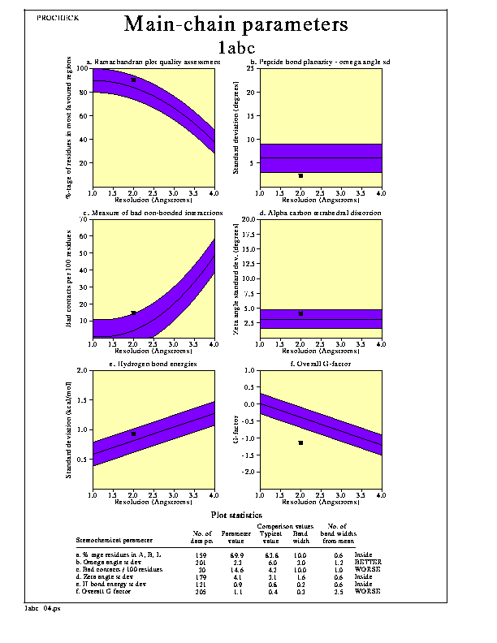

PROCHECK sample plots
PROCHECK sample plots
Plot 4. Main-chain parameters

Description
The six graphs on the main-chain parameters plot show how the structure
(represented by the solid square) compares with well-refined structures at
a similar resolution. The dark band in each graph represents the results
from the well-refined structures; the central line is a least-squares fit
to the mean trend as a function of resolution, while the width of the band
on either side of it corresponds to a variation of one standard deviation
about the mean. In some cases, the trend is dependent on the resolution,
and in other cases it is not.
Note. This plot is intended as a rough guide only and too much
reliance should not be placed on getting results that are "better than
structures at the same resolution".
The 6 properties plotted are:
- a. Ramachandran plot quality. This property is measured by the
percentage of the protein's residues that are in the most favoured,
or core, regions of the Ramachandran
plot. For a good model structure, obtained at high resolution, one
would expect this percentage to be over 90%. However, as the
resolution gets poorer, so this figure decreases - as might be
expected. The shaded region reflects this expected decrease with worsening
resolution.
- b. Peptide bond planarity. This property is measured by
calculating the standard deviation of the protein structure's
omega torsion angles. The smaller the value the tighter the
clustering around the ideal of 180 degrees (which represents a
perfectly planar peptide bond).
- c. Bad non-bonded interactions. This property is measured by the
number of bad contacts per 100 residues. Bad contacts are
selected from the list of non-bonded interactions found by program
NB (see Appendix C). They are defined
as contacts where the distance of closest approach is less than or equal to
2.6Å.
- d. Calpha tetrahedral distortion. This property is measured by
calculating the standard deviation of the zeta torsion
angle. This is a notional torsion angle in that it is not
defined about any actual bond in the structure. Rather, it is defined by
the following four atoms within a given residue: Calpha, N,
C, and Cbeta.
- e. Main-chain hydrogen bond energy. This property is measured by
the standard deviation of the hydrogen bond energies for
main-chain hydrogen bonds. The energies are calculated using the
method of Kabsch & Sander
(1983).
- f. Overall G-factor. The overall G-factor is a measure of the overall
normality of the structure. The overall value is obtained from an
average of all the different G-factors for each residue in the structure.
Options
The main options for the plot are:-
- The plot can be in colour or black-and-white.
These options can be altered by editing the parameter file,
procheck.prm, as described here.
PROCHECK sample plots